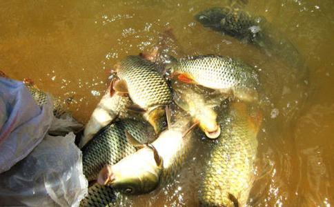

放生简单易行，没有想象中的那么困难；
放生不需要太多财力，几元钱就能买放几条生命；
放生行为并非遗世独立，许多人都理解；
放生效果最迅速，延寿，祛病，求子，培福最适宜；
放生感觉很奇妙，只能用不可思议来形容；
昨天下班路过菜市场，水产摊前，有人在买鱼，看到鱼儿在跳，就走了过去，指着其中两条鲜活的说，这两个给我吧；老板算了一下钱，两条鲫鱼，半斤，5元钱；回去的路上我就一直在想，“两条生命，5元钱”，就是吃顿饭或是打个电话的钱，如果这样是不是可以经常去放生呢？集少成多，每天拿出几元钱；是的，放生不需要太多财力，不需要特殊的时间，下班顺便就行了，真是简单易行。
回到家中，把鱼先放到清水中，看着他们在欢快的游动，自己心也一下子活泼了起来；其实每次都有这样的感觉，下班本来是略有疲惫的，奇怪的是每次买过要放生的鱼后，身子有一种很轻安，很舒适的感觉，很轻松，很自在；觉得身子周围有浮浮的感觉；放生感觉很奇妙，那是一种发自内心的安详，真如春风拂面，阳光自内心两起来。
接下来，洗手，漱口；在大悲观世音菩萨前上香，祈求十方诸佛、菩萨加持鱼儿；然后开示鱼儿：“因往昔所造恶业导致今天的鱼儿身，希望从今以后能够诸恶莫做，众善奉行，早生善道；现在就给你进行三皈依，希望你们认真听”，首先要加持一杯大悲咒水，洒在被放众生的身上，口念忏悔文：‘往昔所造诸恶业，皆由无始贪嗔痴，从身语意之所生，今对佛前求忏悔’，这样念三遍后再为它念三皈依：‘皈依佛，皈依法，皈依僧，……皈依佛不堕地狱，皈依法不堕饿鬼，皈依僧不堕畜生……’之后呢，又念了心经，大悲咒，准提咒，诸佛菩萨的洪名；其中本师释迦牟尼佛，多宝如来，宝髻如来，阿弥陀佛，药师佛，大悲观世音菩萨，地藏王菩萨，虚空藏菩萨，大势至菩萨，普贤菩萨，文殊菩萨是一定要念的；这些佛菩萨名号很重要，只要它们听到了，就永远种在八识田中了；报谢之日就会脱离畜生身；“一切众生皆有两条命，一条是生命，另一条是慧命。放生不但是救它生命，亦要救它的慧命，说三皈依给它听，下一生就不入地狱不做饿鬼不变畜生，免堕三恶道受苦，如得人身，发菩提芽，深信佛法，就有成佛可能，这就是救它的智慧。又如在马路旁或任何地方，看见人家正在杀害生命，没办法救它的时候，我们应发出怜悯的心，口中赶快为它念三皈依及往生咒，也略尽我们三宝弟子的一点悲心”(李炳南老居士讲）
最后用小水桶装上鱼儿，来到河边，轻轻放进水中，看着他们欢快的越游越远；思绪随着鱼儿欢快的游动也越来越变的轻妙飘摇了，慈悲的祥云一下子笼罩了全身。
记得有一次放生乌龟，刚到河边正巧有一群学生也在游玩，我把乌龟放在地上，他们全聚拢了过来，我说，这个乌龟要放掉呢，看着他们的眼神在问为什么不养着呢，“人喜欢自由自在，动物也是”；周围的氛围变的很祥和。
龟刚放到水中，正巧一家父子婆媳四口人走了过来，他们驻足观看，婆婆一看就知道怎么回事，在用很赞叹的语气告诉媳妇，说‘在放生呢’，小伙子看到我满手水，立刻把纸传递了过来。
对于放生，许多人都是理解，从汉中放生，到西安放生，几乎每次有遇到别人
赞叹的语言或眼光；因国家大力于环境保护，爱护野生动物的宣传，社会上个人环保意识和爱护生物想法都是有的，只是跨出放生这一步有点距离。
鱼，虾，憋，龟，蟹都可以放生；特别是出门旅游啊，在山区看到有小孩子在抓着蛇，鸟类的动物在玩，可以给点钱，再告诉他们不要随便伤害动物，就很容易的放掉一条生命。而且环境具备就是当地生长的动物，更容易成活。
动物都有灵性，当你给它们皈依时，大多数能够安静下来，听呢；放到水中后也有不立刻游走的，盘旋一圈后再走，特别时憋，许多还会露出水面，看一眼呢；如果你不断对一只龟颂经，开示啊，你能看到它流下泪水。
大家多放生，对于自己的工作，生活，学习，考试，出国，旅游，出差，办事，升职，安家，搬家，延寿，祛病，生子，求愿，修行，祛障，增慧，培福，皆有不可思议的感应；与家人与自己都有无边大利益，可充天地祥和之气，可应上天好生之德，可熄少刀兵战火之灾，可化解往昔无始以来的怨对仇家；可长养慈悲心，可速成菩提果，可早得阿褥多罗三藐三菩提。
“愿消三障诸烦恼，愿得智慧真明了，普愿罪障悉消除，世世常行菩萨道。”
阿弥陀佛！